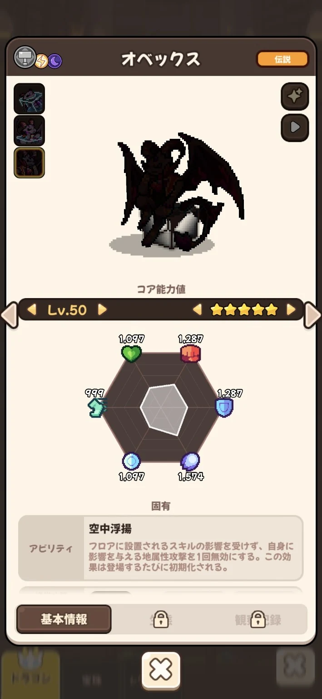

基本情報
- レアリティ
- Legendary（伝説）
- 属性
- 鋼・雷・闇
- 攻撃区分
- 魔法
- 主な獲得先
- ガチャ
LEGENDARY DRAGON
ユーザー提供画像をもとに登録した★5 Lv.50確認済みデータです。

図鑑｜★5 Lv.50フロアに設置されるスキルの影響を受けず、自身に影響を与える地属性攻撃を1回無効にする。この効果は登場するたびに初期化される。
最も基本的な魔法攻撃。鋼属性で攻撃し、エネルギーを1回復する。
空間のエネルギーを凝縮した鋼属性攻撃で敵に大ダメージを与え、敵より自身の速度能力値が低い場合2倍のダメージを与える。戦闘ごとに1回のみ使用可能。
| HP | 攻撃 | 防御 | 魔力 | 抵抗 | 速度 | 合計 |
|---|---|---|---|---|---|---|
| 1,097 | 1,287 | 1,287 | 1,097 | 1,574 | 999 | 7,341 |